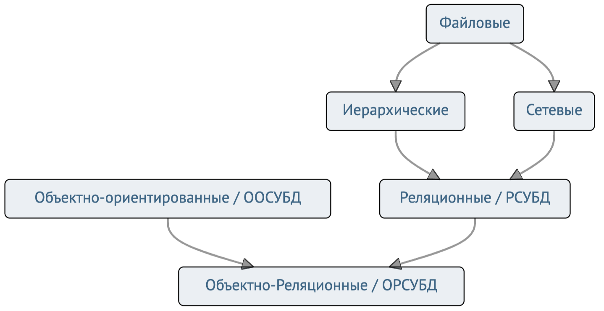
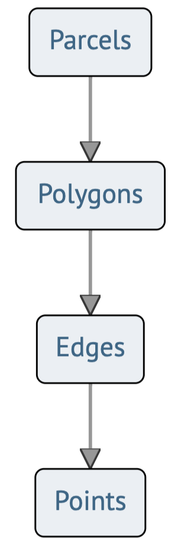
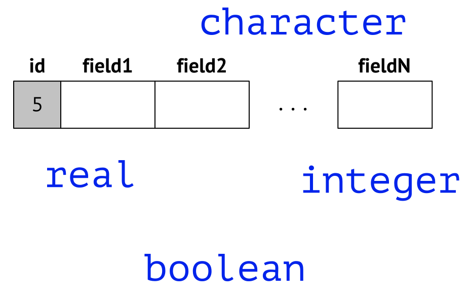
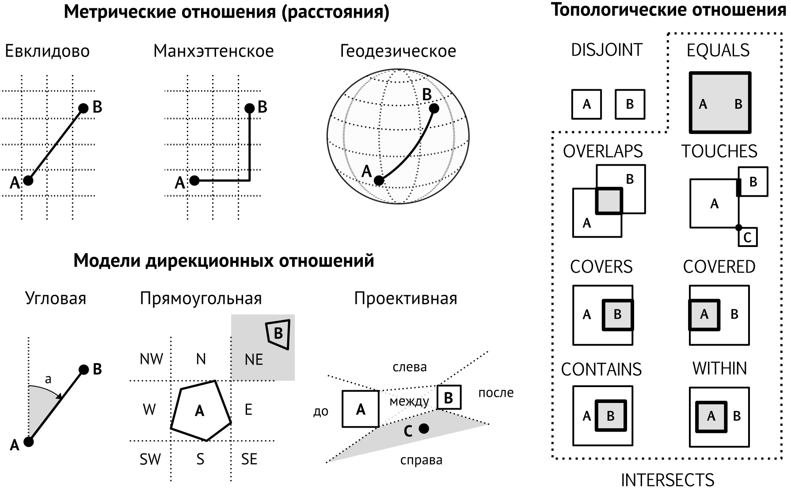

Введение
Геоинформатика I
Самсонов Тимофей Евгеньевич
6 февраля 2025 г.
Геоинформатика
База пространственных данных
- База пространственных данных (ГОСТ Р 52438-2005 2018)
-
Совокупность пространственных данных, организованных по определенным правилам, устанавливающим общие принципы описания, хранения и манипулирования данными, предназначенная для удовлетворения информационных потребностей пользователя.
Жаргон
Не рекомендуются к использованию словосочетания: база геоданных, пространственная база данных, база данных ГИС
Пространственный объект
- Пространственный объект (ГОСТ Р 52438-2005 2018)
-
Цифровая модель материального или абстрактного объекта реального или виртуального мира с указанием его идентификатора, координатных и атрибутивных данных.
Эволюция моделей СУБД
Пространственные данные в РСУБД
Представление в обычной РСУБД достаточно громоздко
| Name | Area | Price | BoundaryID |
|---|---|---|---|
| Уч. 2 | 37.0 | 560000 | 1055 |
| BoundaryID | Edge |
|---|---|
| 1055 | A |
| 1055 | B |
| 1055 | C |
| 1055 | D |
| 1055 | E |
Пространственные данные в РСУБД

Представление в обычной РСУБД достаточно громоздко
| Edge | Point |
|---|---|
| A | 1 |
| A | 2 |
| B | 2 |
| B | 3 |
| C | 3 |
| C | 4 |
| D | 4 |
| D | 5 |
| E | 5 |
| E | 1 |
| Point | X | Y |
|---|---|---|
| 1 | 5 | 0 |
| 2 | 0 | 5 |
| 3 | 3 | 9 |
| 4 | 8 | 8 |
| 5 | 6 | 4 |
Пространственные данные в РСУБД

Представление в обычной РСУБД достаточно громоздко

Абстрактные типы данных
Важное наследие объектно-ориентированных систем — поддержка абстрактных типов данных.
Примитивные типы данных составляют основу реляционных БД. 
Абстрактные типы данных (АТД) обеспечивают хранение коллекций и объектов со свойствами. 
Большинство ОРСУБД предлагают модульный подход к АТД, позволяя добавлять и удалять их.
Пространственная СУБД
Абстрактные типы данных — основа реализации пространственных СУБД.
ПСУБД должна отвечать следующим требованиям:
- Представляет собой программный модуль, взаимодействующий с нижестоящей СУБД или являющийся ее компонентой
- Поддерживает множественные модели пространственных данных, соответствующие им абстрактные типы данных, а также язык запросов, из которого эти типы могут быть вызваны.
- Реализует пространственное индексирование, эффективные алгоритмы пространственных операций и специальные правила оптимизации запросов.
Пространственная СУБД
Основные аспекты функционирования ПСУБД:
- Модели пространственных данных и пространственных отношений.
- Язык запросов
- Обработка и оптимизация запросов
- Организация файлового хранилища
- Выполнение аналитических операций (добыча данных).
Модели пространственных данных
Абстрактные типы данных в ПСУБД реализуют различные модели пространственных данных
Пространственные отношения
Пространственные запросы в ПСУБД опираются на модели пространственных отношений
Язык запросов
Structured Query Language (SQL) — язык структурированных запросов. Применяется для создания, модификации и управления данными в реляционной базе данных.
Пространственная СУБД поддерживает создание и манипулирование пространственными типами данных:
Пространственные расширения SQL
SELECT
m.name,
SUM(ST_Length(r.geom))/1000 as roads_km
FROM bc_roads AS r
JOIN bc_municipality AS m
ON ST_Contains(m.geom, r.geom)
GROUP BY m.name
ORDER BY roads_km;
name | roads_km
----------------------------+------------------
SURREY | 1539.47553551242
VANCOUVER | 1450.33093486576
LANGLEY DISTRICT | 833.793392535662
BURNABY | 773.769091404338
PRINCE GEORGE | 694.37554369147
...Обработка запросов
SQL — декларативный язык. Он описывает что необходимо получить, но не как, т.е. не сам алгоритм выполнения процедуры.
СУБД должна самостоятельно определить план эффективного выполнения запроса.
Обработка запроса представляет собой последовательность шагов, которую инициирует СУБД для выполнения запроса.
Оптимизация пространственных запросов обладает своей спецификой
Обработка запросов
SELECT
FROM reltypes R, soiltypes S
WHERE st_area(S.geom) < 10000 AND st_area(R.geom) < 10000
AND st_intersects(R.geom, s.geom)Пространственный запрос состоит из фильтрации (FILTER) на основе MBR и уточнения (REFINE) по реальной геометрии.
Хранение данных
Данные в файлах имеют одномерное упорядочение. Однако записи можно хранить так чтобы пространственно близкие располагались ближе друг к другу
Хранение данных
Данные в файлах имеют одномерное упорядочение. Однако записи можно хранить так чтобы пространственно близкие располагались ближе друг к другу

Оптимизация запросов
Непространственный запрос Выбери всех школьников 10 класса, которые являются призерами всероссийской олимпиады по географии раскладывается на 2 подзапроса:
ПРОЕКЦИЯ (single-scan): выбрать всех школьников 10 класса
СОЕДИНЕНИЕ (multi-scan): сопоставить таблицу призеров и таблицу школьников
Последовательность
Сначала должен быть выполнен запрос проекции, т.к. соединение является более ресурсоемкой многопроходной (multiscan) операцией
Оптимизация запросов
Пространственный запрос Выбери все регионы с площадью более 100 тыс. кв. км, в которых проходил заключительный этап всероссийской олимпиады школьников по географии раскладывается на 2 подзапроса:
ДИАПАЗОН (single-scan): выбрать регионы с площадью более \(100\) тыс. кв. км
ПРОСТРАНСТВЕННОЕ СОЕДИНЕНИЕ (multi-scan): выбрать регионы, в которых находятся города проведения заключительного этапа
Последовательность
Последовательность не очевидна, т.к. вычисление площади — ресурсоемкая операция. Порядок выполнения пространственных запросов требует тщательного анализа.
Добыча данных
Базы [пространственных] данных — источник информации, который требует особого подхода в силу потенциального объема информации и способов взаимодействия с нею.
- Алгоритмы для больших данных, или решения, позволяющие совмещать аналитику данных и технологии обработки больших массивов информации.
- Расширение функциональности языка запросов — возможность выполнять пространственную аналитику данных “на лету”.
Пример
Пространственно-временные базы данных абонентов сотовой сети могут содержать терабайты информации. Как сделать равномерную случайную выборку?
Библиография
ГОСТ Р 52438-2005. 2018. «Географические информационные системы. Термины и определения». Москва: Стандартинформ. https://docs.cntd.ru/document/1200044680.
Самсонов Т. Е. Геоинформатика: курс лекций